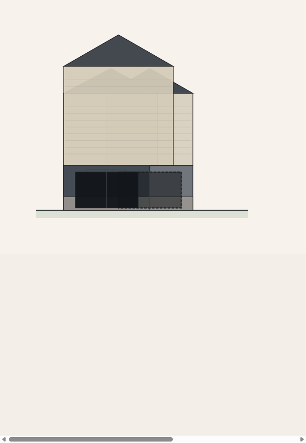
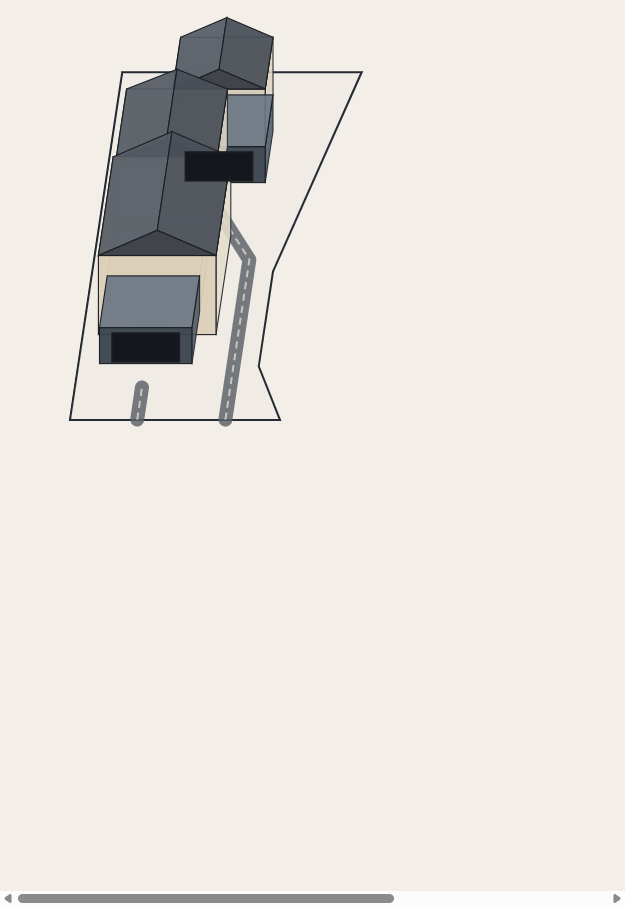

Image 4.2 · official disposition
Honest J1-B geometry finally rendered without drift. Layer match passed; ownership did not.
IMAGE 4.2 OFFICIAL — LAYER MATCH / VALID. Eye-level materials match the deterministic base. Access A/B remain locked side lanes. A near / B deep. Both door overlays use locked east-plane coordinates. Pennsylvania elevation: two equal doors, each 128 SVG units = 16′. Apparent overlap is honest depth projection — not a merged façade. No street-to-garage shortcut; no generator silhouette.
OWNERSHIP GATE — NO. Looking at the exact building, I would not choose to build it if the site were not forcing the architecture. Penn view is garage-dominated with a very large upper wall. Site composition reads access lane → near garage → deep garage → living stacked above, not desirable home A + desirable home B. Building B is subordinate; pedestrian identity is weak; the defining feature remains four enclosed parking spaces. Windows/trim would not change that hierarchy.
IMAGE 4.2 OFFICIAL — LAYER MATCH / VALID
OWNERSHIP GATE — NO
J1-B — STOP
J1-A / J1-C — CLOSED
FLOOR-PLAN SANITY — CANCELLED, not advanced
Images 1–4.2 retained as the complete audit trail
J1 closed cleanly. It did not fail because the renderer drifted; it failed only after we rendered the exact geometry honestly. Next: parking-only Parking Skeleton A-F
Open Parking Skeleton A-F →
Disposition docs
Layer-match checklist (PASSED)
- Eye-level material polygons match the deterministic base
- Access A and B remain the locked side lanes
- A stays near; B stays deep
- Both door overlays use exact locked east-plane coordinates
- Penn elev: two equal doors · each 128 SVG units · 16′ openings
- Overlap is honest depth projection — not merged/resized façade
- No direct street-to-garage shortcut or generator silhouette
Archived photoreal washes remain DRIFT (style only). Official regeneration supersedes them as Image 4.2 geometry proof.
Pennsylvania elevation · three-layer audit
1 · Geometry SVG
Immutable orthographic · DOOR A NEAR / DOOR B DEEP · both 16′
2 · Surfaces only
Materials on same polygons · doors omitted
3 · Door composite
Surfaces + locked door layer on top · VALID
Site view · three-layer audit
1 · Geometry SVG
Both homes · A near / B deep · Access A side lanes
2 · Surfaces only
Materials on same volumes · doors omitted
3 · Door composite
Surfaces + locked east doors · VALID
Official composite rasters

elev composite PNG ≡ layer 3

site-view composite PNG ≡ layer 3
Final gate result
LAYER MATCH — PASS · OWNERSHIP — NO
J1 family closed. Floor-plan sanity cancelled.
Resume at parking-only Parking Skeleton A-F.
J1 family closed. Floor-plan sanity cancelled.
Resume at parking-only Parking Skeleton A-F.